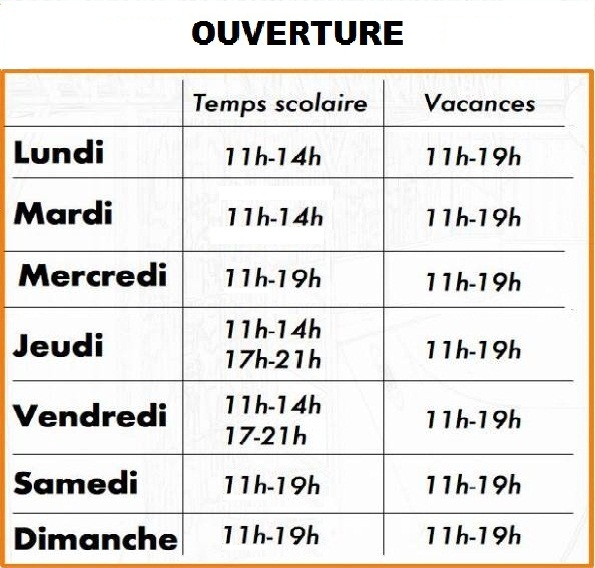
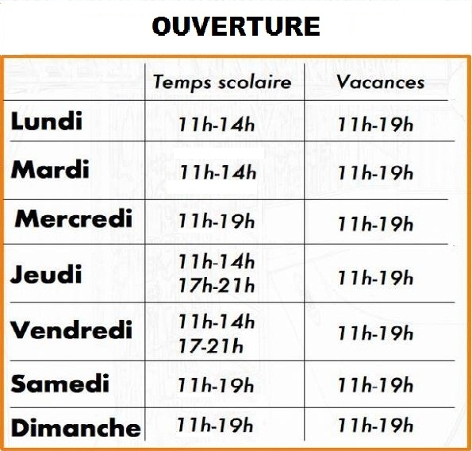

ACCROBRANCHE
2 parcours à 2m et 4m du sol pour enfants (taille minimum: 1m), ados et adultes.
35 ateliers en hauteur: filets, ponts de singe, tonneaux, poutres...
Et 2 tyroliennes de 20m de long !
Equipement, consignes de sécurité et surveillance assurées par un moniteur diplômé.


 
